Obsah
Anglie
Francie
Německo
Spojené státy americké
Rusko
Čechy
+ Karel Hynek Mácha
Co si představíš pod slovem romantický? Kdo je romantik?
Zjisti přesný význam slov román, romance, románský a romantický.
Co má společného romantický večer s romantismem?
|
ROMANTISMUS
Romantismus se začal prosazovat na přelomu 18. a 19. století. V angličtině toto slovo původně znamenalo románový, čili vymyšlený nebo neskutečný. Mnozí současníci viděli v romantismu módní pózu a romantiky vůbec nechápali. V nejširším slova smyslu byl romantismus životní pocit, který vyvěral z dobové atmosféry. Romantici upřednostňovali cit před rozumem, šířili revoluční ideály, prosazovali občanské svobody a individualismus. To všechno jim soudobá společnost nenabízela. Ba právě naopak, v reakci na četná povstání se panovníci uchylovali k omezování svobod a teroru. Romantici nemohli prosadit ani nové uspořádání světa, ani se nedokázali zařadit do společnosti. Výsledkem byla naprostá deziluze. Romantičtí umělci hledali útěchu v nespoutané přírodě, bájné minulosti, vysněné historii, exotických dálkách nebo neškodné fantazii. Průchod revolučnímu nadšení, hluboce prožívanému rozporu mezi ideálem a skutečností nebo přesvědčení o vlastní výjimečnosti dávali alespoň ve svých literárních dílech. Romantismus se prosadil nejen v Evropě, ale také v Americe nebo Indii (čhájavád).
|
Historie
Úspěšný boj britských kolonií v Americe za nezávislost (1776), Velká francouzská revoluce (1789-1794) a zmařené úsilí Napoleona o světovládu (1799-1815) rozpoutaly mezi absolutistickými panovníky obavy z dalších převratů. Většina evropských vládců přistoupila k Svaté alianci, která měla bdít nad novým rozdělením Evropy po vídeňském kongresu (1814-1815). Záhy ale přišly další revoluce. Ve 20. letech povstali Španělé, Řekové a Rusové, ve 30. letech Francouzi, Belgičané a Poláci a roku 1848, tzv. jaro národů, už prakticky celá Evropa (Itálie, Německo, Francie, Rakousko).
|
Doba revolucí
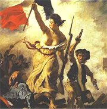
Delacroix: Svoboda vedoucí lid
|
Doba revolucí
Konec 18. století byl ve znamení revolucí. Povstalci usilovali o samostatnost (Spojené státy americké) nebo o změnu politického uspořádání (Francie). Revolucionáři upřednostňovali republiku před monarchií a konstituci před absolutismem, prosazovali občanské svobody a definovali základní lidská práva. Nové pořádky nastolovali násilím.
Heslo Velké francouzské revoluce bylo „volnost, rovnost, bratrství“. Rozchod s minulostí měly zdůraznit nové názvy měsíců, nový letopočet, sjednocení metrického systému, názvy institucí (Výbor pro veřejné blaho, Národní shromáždění...) nebo náboženské reformy. Rozpoutaný teror dopadl na 200 000 lidí, kteří skončili pod gilotinou.
Řecko si vybojovalo nezávislost na Turecku (1821-1829). Nová vlna revolucí přišla v roce 1830. Francouzi svrhli bourbonskou dynastii, Belgičané získali samostatnost a Poláci neúspěšně povstali proti ruské nadvládě.
Opravdu revolučním obdobím bylo jaro národů (1848-1849). Vypukla povstání ve Francii, rozdrobené Itálii a Německu. V Rakousku povstala Vídeň, Budapešť i Praha. Všechny revoluce byly neúspěšné.
|
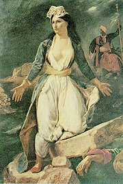
Delacroix: Řecko umírá v troskách Missolunghi
|
Nacionalismus
V Itálii vznikl pod vlivem svobodných zednářů tajný spolek karbonářů. Karbonáři bojovali proti rakouské nadvládě a podíleli se na revolucích v Neapoli a Piemontu. Později se připojili k hnutí Mladá Itálie. Francouzští karbonáři zase bojovali proti Bourbonům.
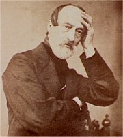
Giuseppe Mazzini
|
Nacionalismus
Formování národů probíhalo v Evropě velmi dlouho. Zprvu byla klíčová příslušnost k určitému náboženství a lidé se dělili na křesťany, židy a muslimy. Důležité bylo také zařazení do daného stavu – šlechta, duchovenstvo, poddaní, svobodní sedláci, měšťané atd. Základem vlastenectví byla nejprve příslušnost k určitému území, případně společný jazyk. Na konci 18. století se k těmto znakům přidávají ještě společné dějiny, lidová kultura nebo umění. Výsledkem bylo nové pojetí identity založené na příslušnosti k určitému národu. Horliví vlastenci viděli v národě svébytný celek, který má určitou povahu, poslání, ducha, nepřátele atd. Později se stalo prosazování národních zájmů hlavním programem některých politiků.
Snaha nacionalistů o vytvoření národních států vedla k celé řadě povstání. Podle situace usilovali revolucionáři buď o nezávislost na větších státních celcích (Spojené státy americké, Řecko, Belgie), nebo o sjednocení menších států do jednoho (Německo, Itálie). Nacionalisté zakládali tajné revoluční spolky. Zvláště aktivní byl Ital Giuseppe Mazzini (1805-1872), zakladatel hnutí Mladá Evropa, které sdružovalo spolky Mladá Itálie, Mladé Německo a Mladé Polsko. Obdobnými organizacemi bylo Mladé Irsko a Mladé Rusko nebo český revoluční spolek Repeal.
|
Co si myslíš o nacionalismu?
Jaký je tvůj názor na budoucnost českého národa v Evropské unii a globalizovaném světě?
Popiš českou národní povahu.
Které výroky se tradují o různých národech? Jsou pravdivé?
Jaký je rozdíl mezi národem, národností a občanstvím?
Charakterizuj osud národnostních menšin v různých národních státech?
Které národy nemají vlastní státy? Proč?
Ve kterých státech žije svorně více národností?
Které státy mají problémy s nacionalismem? Jak by se daly vyřešit?
Co je multikulturní společnost?
|
Romantická literatura
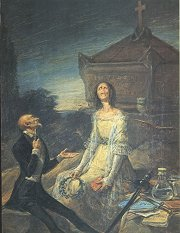
Leonardo Alenzo: Romantická sebevražda
|
Romantická literatura
Romantikové nerespektovali klasicistní pravidla a vyznávali tvůrčí svobodu. Podle libosti mísili literární žánry i formy – tvořili lyrickoepické skladby, romány v dopisech, verších a novelách nebo tragikomedie.
Romantické postavy odrážejí nenaplněné touhy spisovatelů a často mívají autobiografické rysy. Hrdinové knih se bouří proti společenským konvencím, žijí na okraji společnosti (vězni, zbojníci, tuláci, Cikáni a další vyděděnci), prožívají nešťastnou lásku a většinou končí tragicky. Romantická díla překypují vášněmi a city. Autoři se zaměřují na psychologii postav. Zvláště typický je pro romantiky subjektivismus a zájem o minulost. Historická věrnost jim na srdci příliš neležela. Minulost byla spíše kulisou, jejímž prostřednictvím chtěli evokovat krásné zašlé časy, kdy lidé prožívali opravdové city. Nejoblíbenějším obdobím byl středověk.
Jaké národnosti byli následující romantici? Mickiewicz, Słowacki, Ševčenko, Leopardi, Lenau, Petöfi, Lönnrot, Prasád, Prémčand. Co o nich víš?
|
Populární čtivo
S rozmachem gramotnosti rostla obliba nenáročné zábavné literatury. V době romantismu se zrodila celá řada žánrů – černý román, horor, detektivka, dobrodružný příběh, indiánka nebo červená knihovna, které jsou velmi populární dodnes. Většinou šlo o nepříliš kvalitní produkci.
Kteří autoři se věnovali psaní nenáročné literatury? Ve kterých žánrech vynikli?
Čteš některý z uvedených žánrů soustavně? Proč?
Co je brak, kýč a čtivo? Jak se liší od umělecké literatury?
|
Výtvarné umění
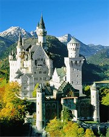
Německý novogotický zámek Neuschwanstein

Delacroix: Sardanapalova smrt
|
Architektura, malířství a sochařství
V 19. století se v architektuře prosadil historizující sloh (historismus), který čerpal inspiraci v minulých uměleckých epochách (neogotika, novorenesance) nebo orientálních budovách (Čína, islámské země). Jednotlivé stavby jsou tudíž velmi různorodé. Budovaly se napodobeniny středověkých kostelů i hradů (Neuschwanstein, Hluboká), zříceniny (Janohrad) nebo veřejné stavby (Londýnský parlament, Národní muzeum v Praze). Nový vztah ke krajině dal vzniknout rozhlednám. Anglické parky (Lednicko-valtický areál) více respektují přírodu. V malířství a sochařství se objevují revoluční témata a historické náměty. Krajináři zachycují dramatické přírodní výjevy (bouře). Vzhled interiérů ovlivnil biedermeier.
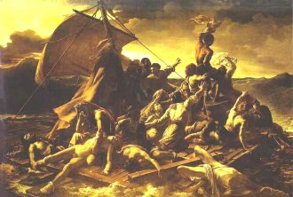
Géricault: Vor Medusy
|
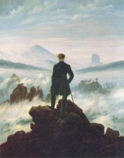
Fiedrich: Poutník nad mořem mlhy
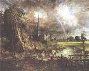
Constable: Katedrála v Salisbury
|
Hudba
Romantismus ovlivnil i tzv. národní hudební školy. V Čechách to byli skladatelé Bedřich Smetana (1824-1884), Zdeněk Fibich (1850-1900) nebo Antonín Dvořák (1841-1904). Znáš jejich díla?
Kdo napsal následující opery? Fidelio, Čarostřelec, Lazebník sevillský, Vilém Tell, Aida, Rigoletto, Nabucco, Traviata, Trubadúr, Prsten Nibelungův, Parsival, Tristan a Izolda, Lohengrin, Mistři pěvci norimberští, Bludný Holanďan.
|
Romantická hudba
V době romantismu velmi vzrostla obliba hudby. Předním skladatelem byl Ludwig van Beethoven (1770-1827). V hudbě vynikli rovněž Italové Giuseppe Verdi (1813-1901) a Gioacchino Rossini (1792-1868), Němci Carl Maria von Weber (1786-1826), Felix Mendelssohn-Bartholdy (1809-1847), Robert Schumann (1810-1856) a Johannes Brahms (1833-1897), Francouz Hector Berlioz (1803-1869), Rakušan Franz Schubert (1797-1828), Maďar Ferenz Liszt (1811-1886) nebo Polák Fryderik Chopin (1811-1886). Nejvýznamnějším představitelem hudebního novoromantismu byl německý operní skladatel Richard Wagner (1813-1883), který přišel s koncepcí gesamtkunstwerku – syntetického dramatického celku, který neopomíjel žádnou uměleckou složku.
Mezi houslisty vynikal italský génius Niccolò Paganini (1782-1840).
|
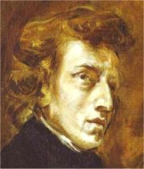
Delacroix: Chopin
|
Novoromantismus
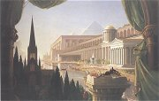
Cole: Architektův sen
|
Novoromantismus
Na konci 19. století se někteří umělci znovu obrátili k romantickým tématům. Novoromantiky byli skotští spisovatelé Robert Louis Stevenson (1850-1894), autor dobrodružného románu Ostrov pokladů nebo hororu Podivný případ dr. Jekylla a pana Hyda, a Arthur Conan Doyle (1859-1930), autor detektivních příběhů o Sherlocku Holmesovi nebo fantastického románu Ztracený svět. Můžeme k nim zařadit i Brauna Stokera (1847-1912) a jeho horor o hraběti Draculovi. K novoromantismu se hlásil také Francouz Edmont Rostand (Cyrano de Bergerac) nebo
Čech Julius Zeyer.
|
Novoromantismus
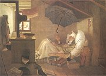
Spitzweg: Chudý básník
|
Internetové stránky
Romantismus
Romantic art, reprodukce
Romantische Malerei, reprodukce
Romantic Poetry
Petöfi: Koncem září, Z dáli
Exkurze
Lednicko-valtický areál
Neuschwanstein, zámek
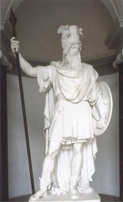
Bengt Erland Fogelberg: Odin
|
Doporučená četba
Bělousov, Roman Sergejevič: Knihy o tom mlčí, přel. M.Pittermannová, Mladá fronta, Praha 1971
Delacroix, E.: Deník, Praha 1956
Doyle, Arthur Conan: Muž s dýmkou a houslemi
Doyle, A.C.: Pes baskervillský, přel. F.Gel, Albatros, Praha 1978
Doyle, A.C.: Příběhy Sherlocka Holmese, přel. Henzl, Zábrana, Jota, Brno 1997
Fischer, Ernst: Původ a podstata romantismu, Praha 1966
Lenau, Nikolaus: Blesky nad roklí, přel. J.Mulač, Mladá fronta, Praha 1969
Leopardi, Giacomo: Poesie Luny, přel. K.Bednář, SNKLHU, Praha 1959
Lynton, Norbert: Umění 19. a 20. století, přel. V.Nosková, Artia, Praha 1981
Mickiewicz, Adam: Konrád Wallenrod, Dziady, přel. F.Halas, SNKLHU, Praha 1954
Mickiewicz, A.: Pan Tadeáš čili Poslední nájezd na Litvě, přel. E.Sojka, Odeon, Praha 1969
Michelet, J.: Francouzská revoluce, Praha 1989
Hegel, G.W.F.: Estetika
Kalevala, přel. J.Holeček, Odeon, Praha 1980
Pijoan, José: Dějiny umění, 8.díl
Petöfi, Sándor: Mé písně, Rovnost, Brno 1950
Romantismus, přel. F.Serrano, Paseka, Praha 2001
Rostand, Edmond: Cyrano z Bergeraku
Słowacki, Juliusz: Já Orfeus, přel. J.Pilař, Odeon, Praha 1987
Stevenson, Robert Louis: Ostrov pokladů
Stevenson, R.L.: Podivný případ dr. Jekylla a pana Hyda
Stoker, Braun: Dracula, přel. T.Korbař, Práce, Praha 1991
Ševčenko, Taras: Bílé mraky, černá mračna, přel. Z.Bergerová, Praha 1977
|
Připrav si referát o některé z uvedených knih nebo internetových stránek.
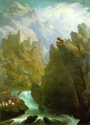
John Martin: Bard
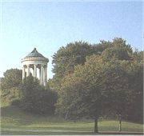
Romantický (anglický) park
|
|